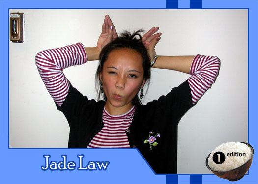

|
Why did you get involved with Theatre Rice? the creative outlet! TR allows all forms of art to be displayed, and i think we've encompassed many of the forms. there's some beautiful things going on in publicity, not to mention the boundless stage. woo! plus, i get superstardom across campus as all tread in fear of me. yeah! plus i was threatened by my neighboring costars. grar, i hate you people upstairs! What do you hope to gain from TR? lifelong friendships. hah, what a corny answer. well, i'm hoping to form a jamie espiritu fan club, showcase my variable skills, and fill up that 7-9:30 gap in my life. What do you like to do in your spare time? ah, if i'm not extraordinarily busy with work as a computer lab monitor, schoolwork(15 units! egads!), or droning on about Theatre Rice, i lead quite a quiet life, occasioned by books and cookies. and yes, i've heard before that i'm a fat girl in a skinny body. so what?! ah, yes, i like to throw things at people, preferably from my window. cats work remarkably well. ah, i also indulge in histrionic fits. ;D What are your favorite films or t.v. shows? Cowboy Bebop, Simpsons, Trigun, Buffy, friends, Iron Chef, Futurama, regret, Salvador Dali, Vincent Van Gogh, Claude Monet, yeah its art, so what? i'm also impressed by Haruki Murakami, stephen hawking, Einstein, and countless others. yeah, i have lots of free time. you wanna make something of it? If you had a quote that defines how you live life, what would it be? "if i can't serve as a good example, then i can always be a horrible warning" -anonymous, or unknown. eh. |